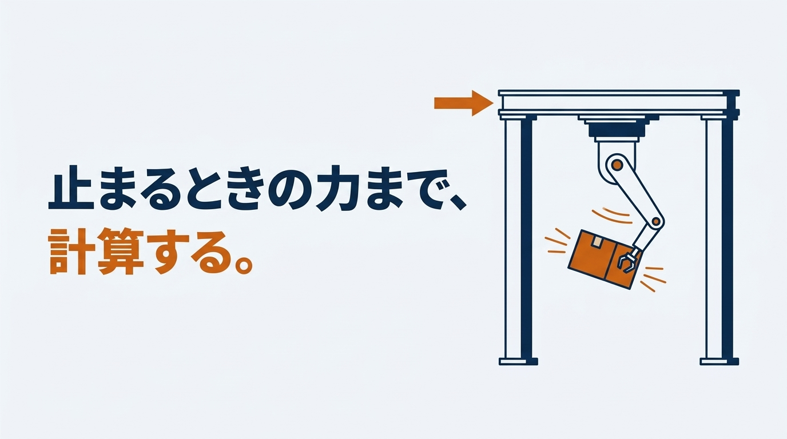
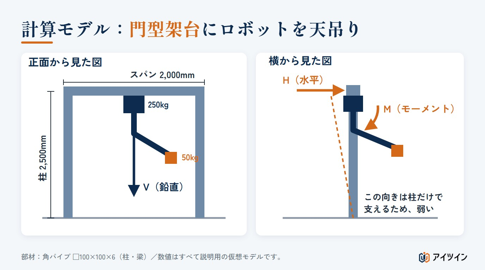
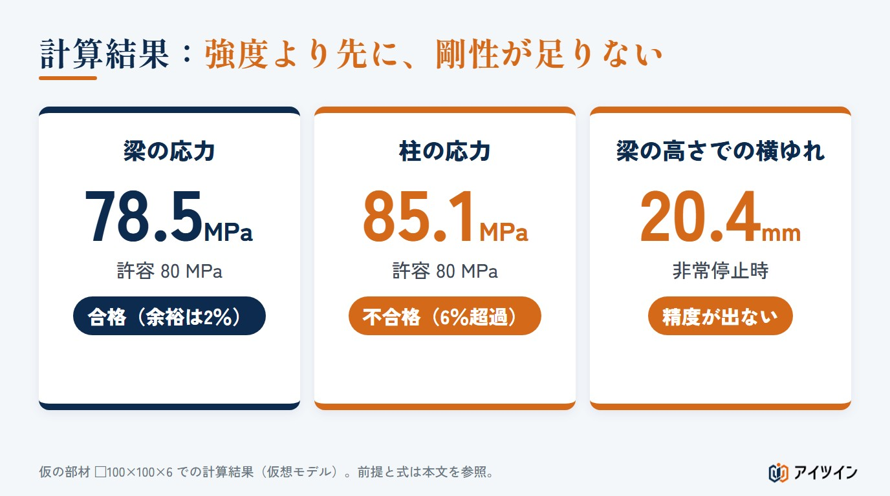
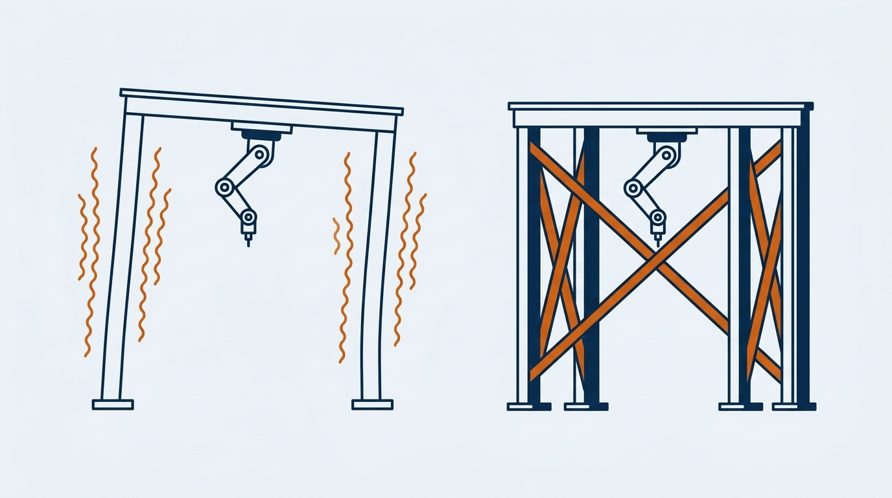

ロボットの重さに耐える部材を選んだのに、動かしてみると架台が揺れる。原因の多くは、ロボット架台の強度計算を自重だけで済ませていることにあります。本記事では、非常停止時の慣性力をどう扱うかを中心に、架台の強度計算の方法を、仮想モデルの計算例つきで解説します。
記事中の数値は、すべて説明用の仮想モデルのものです。一般論にとどまる値には「要確認」と記しています。実際の設計では、メーカーの資料とご自身の条件で確認してください。
止まっている設備をのせる架台の基本（梁の曲げ・たわみ・柱の座屈、部材ごとの違い）は、架台の強度計算の方法と例で解説しています。本記事はその応用編です。
この記事でわかること
- 非常停止時に架台へ入る力の整理と、慣性力の求め方
- 仮想モデルでの計算例（応力・たわみ・アンカー）
- よくある失敗と、架台の強度計算書に残す項目
- 自分の条件を入れて試せる、概算の計算ツール
なぜ静荷重だけの強度計算では足りないのか
ロボットは、質量のあるアームを高速で動かし、短い時間で止めます。止めるときには「質量×加速度」の慣性力が生じ、その反力が架台に伝わります。この力は自重と違い、横向きにも、ねじる向きにもかかります。
柱は、縦に押される力には強い一方、横から押される力には弱い部材です。自重（鉛直、つまり上下方向の力）だけで部材を決めると、横向きの力に対する強さと剛性が足りなくなります。これが「計算上は持つのに揺れる」理由です。
非常停止時にロボット架台へ入る力
強度計算で扱う力は、次の4つに整理できます。
| 力 | 向き | 内容 |
|---|---|---|
| 自重 | 鉛直 | ロボット本体、ハンド、ワーク、架台自身の重さ |
| 慣性力 | 水平・鉛直 | 減速時に「質量×加速度」で生じる力。動く向きによって方向が変わる |
| モーメント | 倒す・ねじる | 力の作用点と取付面が離れているために生じる。「力×距離」 |
| 繰り返し | － | 通常運転の加減速が何百万回もかかることによる疲労 |
見落とされやすいのがモーメントです。アームを水平に伸ばすと、止まっているだけでも「重さ×腕の長さ」のモーメントがかかり、非常停止ではこれに慣性力の分が上乗せされます。
疲労の視点も欠かせません。非常停止は回数が少ない一方、通常の加減速は稼働中ずっと繰り返されます。最大荷重での確認とは別に、通常運転の荷重で溶接部の疲労を確認します。評価方法は、鋼構造の疲労設計の指針類を参照してください（要確認）。
慣性力の求め方｜メーカー資料と概算の使い分け
第一の方法：メーカー資料の「据付面にかかる力」を使う
多くのロボットメーカーは、取扱説明書などに、据付面に作用する力とモーメントを、停止時・加減速時・非常停止時などに分けて載せています（要確認）。入手できる場合は、この値を使うのが基本です。読むときは、次の点を確かめます。
- 力とモーメントの向き（鉛直・水平、どの軸まわりか）
- どの動作条件の値か（通常の加減速か、非常停止か）
- 最大可搬質量・最大速度での値か
第二の方法：減速時間から自分で計算する
構想段階で資料がない場合は、自分で概算します。
加速度 a ＝ 速度 v ÷ 停止時間 t
慣性力 F ＝ 動く質量 m × 加速度 a
モーメント M ＝ 慣性力 F × 取付面からの距離
停止時間は、メーカーが公開している停止時間・停止距離の資料から読み取ります（要確認）。アームは先端ほど速いため、質量を「先端のワーク」と「アーム」に分け、それぞれの重心の速度で計算します。自分で出した値は概算です。詳細設計では、メーカーの値で確かめ直します。
安全率の置き方と、根拠の示し方
安全率は、「何に対する」「いくつ」を、出典とともに書きます。本記事の計算例では、鋼の引張強さを基準にした経験的な目安（アンウィンの安全率。鋼では静荷重3、片振りの繰り返し5、両振り8、衝撃12）から、5を使います（要確認）。降伏点を基準に、より小さい安全率で許容応力を決める会社も多くあります。どちらを採るかで合否が変わるため、社内基準や客先の指定を優先し、採用した基準を明記します。
機械の構造物の規格の例として、クレーン構造規格（厚生労働省告示）では、許容応力を「降伏点÷1.5」と「引張強さ÷1.8」の小さい方とします。SS400（板厚16mm以下）では163MPaです。特集の「溶接の強度計算」は、この規格の考え方を使っています。本記事の80MPaは、くり返しの力も見込んで、さらに余裕をとった値です。計算ツールでは、どちらの基準でも試せます。
また、自分で概算した慣性力は2倍して扱います。急に加わる力には、静かに加えた場合の最大2倍の応答が生じうるためです。メーカーが公表する値を使う場合は、この2倍は掛けず、メーカーの指示に従います。
仮想モデルでのロボット架台の強度計算例

前提条件
| 項目 | 値 |
|---|---|
| ロボット | 本体 250kg、可搬 50kg（ハンド含む）、最大リーチ 1,400mm |
| 架台 | 門型、スパン L＝2,000mm、柱高さ h＝2,500mm、梁の中央に天吊り |
| 部材（仮） | 角パイプ □100×100×6、SS400（市販の角形鋼管はSTKR400が一般的。引張強さと降伏点の下限は同じ・要確認） |
| 断面性能 | A＝2,163mm²、I＝3.11×10⁶mm⁴、Z＝62.3×10³mm³、i＝37.9mm、17.0kg/m（JISの断面性能表の値・要確認） |
| 材料 | 引張強さ 400MPa、降伏点 245MPa、ヤング率 E＝205,000MPa |
| 許容応力 | 400 ÷ 5 ＝ 80MPa（降伏点245MPaに対しては約3倍の余裕） |
| 仮定 | 手先速度 2.0m/s、停止時間 0.2s、動く部分の質量は本体の6割（150kg）で重心はリーチの半分。残りの100kgは取付部にあり動かない（すべて仮定・要確認） |
荷重の算出
自重 Vs ＝ (250＋50)×9.81 ＝ 2,943 N
自重によるモーメント（アームを水平に伸ばした姿勢）
Ms ＝ 50×9.81×1.4 ＋ 150×9.81×0.7 ＝ 1,717 N·m
加速度 手先 a ＝ 2.0÷0.2 ＝ 10 m/s²、アーム重心はその半分で 5 m/s²
慣性力 F ＝ 50×10 ＋ 150×5 ＝ 1,250 N → 2倍して 2,500 N
（下降中に止まれば鉛直に、旋回中に止まれば水平にかかる）
慣性力によるモーメント
Md ＝ (50×10×1.4 ＋ 150×5×0.7)×2 ＝ 2,450 N·m
鉛直と水平の慣性力が同時に最大になることはありませんが、ここでは安全側に、両方が同時にかかるものとして扱います。鉛直力は「自重＋鉛直の慣性力」、水平力は「水平の慣性力」で、向きの違う力を足し合わせてはいません。
| 設計に使う荷重 | 値 | 内訳 |
|---|---|---|
| 鉛直力 V | 5,443 N | 自重 2,943＋鉛直の慣性力 2,500 |
| 水平力 H | 2,500 N | 水平の慣性力 |
| モーメント M | 4,167 N·m | 自重 1,717＋慣性力 2,450 |
梁の応力
梁は、アームを梁と同じ向きに伸ばした姿勢で確認します。このときモーメントは梁を曲げる向きに働きます。両端を単純支持とみなして安全側に計算します。中央に鉛直力とモーメントが作用し、梁の自重（17.0kg/m×9.81＝166.8N/m）が等分布でかかります。
鉛直力 V×L÷4 ＝ 5,443×2,000÷4 ＝ 2,721,500 N·mm
モーメント M÷2 ＝ 4,166,750÷2 ＝ 2,083,375 N·mm
自重 w×L²÷8 ＝ 166.8×2.0²÷8 ＝ 83.4 N·m ＝ 83,400 N·mm
合計 Mb ＝ 4,888,275 N·mm
応力 σ ＝ Mb÷Z ＝ 4,888,275÷62,300 ＝ 78.5 MPa ＜ 80 MPa
柱1本あたりの軸力・せん断力・曲げモーメント
柱は、アームを梁と直角の向きに伸ばした姿勢で確認します。門型架台は、横から見た向き（面外）には柱が片持ち梁として働くため、この向きが最も厳しくなります。左右対称として、水平力は柱2本で半分ずつ受け、モーメントは梁のねじりを通じて柱の上端に半分ずつ伝わるものと単純化します。
せん断力 Q ＝ H÷2 ＝ 1,250 N
軸力 N ＝ 5,443÷2 ＋ 梁の半分 167 ＋ 柱 417 ＝ 3,305 N
曲げモーメント（柱脚）
Mc ＝ Q×h ＋ M÷2 ＝ 1,250×2,500 ＋ 2,083,375 ＝ 5,208,375 N·mm
曲げ応力 σb ＝ 5,208,375÷62,300 ＝ 83.6 MPa
圧縮応力 σc ＝ 3,305÷2,163 ＝ 1.5 MPa
合計 σ ＝ 85.1 MPa ＞ 80 MPa（不合格）
座屈も確かめます。面外は上端が自由な柱として、座屈長さを高さの2倍とします。
細長比 λ ＝ 5,000÷37.9 ＝ 132
座屈荷重 Pcr ＝ π²×E×I÷Lk² ＝ π²×205,000×3.11×10⁶÷5,000² ＝ 約252,000 N
軸力 3,305 N に対して約76倍の余裕
この姿勢では、梁にねじりも生じます。角パイプを薄肉の閉じた断面とみなすと、次のとおりです（Am は板厚の中心線で囲まれる面積、t は板厚）。
ねじりモーメント T ＝ M÷2 ＝ 2,083,375 N·mm
せん断応力 τ ＝ T÷(2×Am×t) ＝ 2,083,375÷(2×94×94×6) ＝ 約19.6 MPa
判定
| 部位 | 発生応力 | 許容応力 | 判定 |
|---|---|---|---|
| 梁 | 78.5 MPa | 80 MPa | 合格（余裕 2％） |
| 柱 | 85.1 MPa | 80 MPa | 不合格（6％超過） |
| 柱の座屈 | 3,305 N | 約252,000 N | 余裕あり |
仮の部材では、柱が許容応力を超えました（降伏点を基準に許容応力を決める場合は、判定が変わります）。鉛直の自重だけを見れば、柱の応力は約1MPa（軸力2,055N÷2,163mm²）で、まったく問題がないように見えます。差を生んでいるのは、水平力とモーメントです。
この章のまとめ
- 柱は、面外の水平力とモーメントによる曲げで決まる
- 仮の部材では、梁は余裕2％、柱は6％超過
剛性（たわみ）の確認｜強度が足りても精度が出ない理由
応力が許容値に収まっても、架台がたわめば手先はその分ずれます。同じ荷重で、梁の高さでの横方向の変位を求めます。
水平力による変位 Q×h³÷(3EI) ＝ 1,250×2,500³÷(3×205,000×3.11×10⁶) ＝ 10.2 mm
モーメントによる変位 (M÷2)×h²÷(2EI) ＝ 2,083,375×2,500²÷(2×205,000×3.11×10⁶) ＝ 10.2 mm
合計 約 20.4 mm
これは柱脚と接合部を完全な固定とした単純なモデルの値です。実物は接合部がわずかに動くため、これより大きくなると考えます。

繰り返し位置決め精度と、架台のたわみの関係
非常停止時だけではありません。アームを伸ばした姿勢では、自重によるモーメント（1,717N·m）だけで梁の高さが約4.2mm動き、柱の上端が約0.0034rad傾きます。取付面から1m下の手先では、合わせて約7.6mmのずれになり、姿勢を変えるたびにこの量が変わります。
ロボット単体の繰り返し位置決め精度は、0.1mm以下の機種が多くあります（機種ごとに要確認）。架台がミリ単位で動けば、ロボットの精度は活かせません。横方向のばね定数（約245N/mm）と質量（約350kg）から単純に求めた固有振動数は約4Hzと低く、停止後の揺れも長く残ります。
たわみの目安値をどう決めるか
たわみに一律の基準はありません。作業に必要な位置精度から逆算し、たとえば必要精度の数分の一以下を架台の許容変位とします（社内基準・要確認）。メーカーが架台の剛性や固有振動数の推奨値を示している場合は、それに従います。
参考までに、柱を □150×150×6（I＝11.5×10⁶mm⁴、Z＝153×10³mm³・要確認）に上げると、柱の応力は約35MPa、変位は約5.5mmになります。強度は満たしますが、変位はまだミリ単位です。部材を太くするだけでは限界があり、形そのものの見直しが必要です。
この章のまとめ
- 非常停止時の変位は約20mm、姿勢の変化だけでも手先が約7.6mmずれる
- 許容たわみは、必要な位置精度から逆算して決める
アンカーの検討｜引き抜き力とせん断
柱脚の曲げモーメントは、アンカーボルトの引き抜き力として床に伝わります。ボルトの間隔 d を150mmと仮定し、圧縮側のボルト列を回転の中心として、引張側の2本で受けるものとして概算します。軸力は柱の中心（回転の中心から d÷2）に働き、引き抜きを打ち消す向きに効きます。
引き抜き力（1本） T ＝ (Mc － N×d÷2)÷(d×2)
＝ (5,208,375 － 3,305×75)÷(150×2) ＝ 約16,500 N
せん断力（1本） 1,250÷4 ＝ 約313 N
支配的なのは引き抜きです。コンクリート側の破壊で決まることが多いため、アンカーメーカーの技術資料にある許容引張荷重と比べて判定します。許容値は、アンカーの種類、埋め込み深さ、コンクリートの強度、へりあき、施工の状態で大きく変わります（要確認）。本記事では判定しません。あと施工アンカーの設計と施工は、資格や指針が関わるため、専門家に確認してください。この柱脚のアンカーとベースプレートの判定は、「アンカーボルトの引き抜き計算」で続きを解説しています。
自分の条件で試す｜ロボット架台の強度計算ツール（概算）
ここまでの計算を、ご自身の条件に置き換えて試せます。数値を動かすと、結果がその場で変わります。初期値は、本記事の仮想モデルと同じです。
門型架台・天吊りロボットの概算
本記事と同じ単純化（梁は両端単純支持、柱は面外方向の片持ち梁、慣性力は2倍、鉛直と水平の慣性力は同時に作用）による概算です。溶接部、ベースプレート、床は計算に含みません。結果は設計の可否を保証するものではありません。実際の設計では、メーカーの資料と専門家の確認にもとづいて判断してください。
ロボットの条件
架台の条件
部材（柱・梁とも角パイプ）
許容応力の決め方
設計に使う荷重
| 鉛直力 V（自重＋鉛直の慣性力） | N |
|---|---|
| 水平力 H（水平の慣性力） | N |
| モーメント M（自重＋慣性力） | N·m |
結果
| 梁の応力 | MPa |
|---|---|
| 柱の応力 | MPa |
| 柱の座屈荷重に対する余裕 | 約 倍 |
| 梁のねじりによるせん断応力 | MPa |
| 横ゆれ（非常停止時・梁の高さ） | mm |
| 姿勢の変化による手先のずれ（取付面から1m下） | mm |
| 横方向の固有振動数（単純なモデル） | 約 Hz |
| アンカー1本の引き抜き力 | N |
ロボット架台の強度計算でよくある失敗

静荷重だけで部材を決める
鉛直の自重だけでは、柱の応力は約1MPaです。水平力とモーメントを入れて、初めて実態が見えます。
溶接部・ボルト接合部を剛結と仮定してしまう
計算では接合部を「完全に固定」と置きがちですが、実際にはわずかな回転やすべりがあります。変位には余裕を見ておきます。
ブレース（筋かい）を入れずに門型のまま使う
門型は、面外の力を柱の曲げだけで受けます。筋かいを入れる、門型を2組並べて4本脚にするなど、力を部材の曲げではなく軸力で受ける形にすると、同じ部材でも剛性は大きく上がります。
床の支持力を確認していない
床が薄い、ひび割れがある、目地の近くにアンカーを打つ、といった条件では、床が先に負けます。床の厚さと状態は、設計の前に確かめます。
架台の強度計算書として残すべき項目
客先や元請に提出する架台の強度計算書には、結果だけでなく、前提と根拠を残します。条件が変わったときに、どこを計算し直すかが分かるためです。
- 対象と適用範囲（ロボットの仕様、ハンドとワークの質量、設置形態）
- 荷重条件とその出典（メーカー資料の名称と版、または仮定した値）
- 計算モデル（支持条件、荷重の向き、単純化した点）
- 部材の断面性能、材料の強度と出典
- 安全率と許容応力の決め方
- 応力・たわみ・座屈・アンカーの計算と判定
- 接合部（溶接、ボルト、ベースプレート、ロボット取付部）の確認
- 未確認の事項と、計算の前提が成り立つ条件
本記事の計算例は、溶接部、ベースプレートの曲げ、ロボット取付部、鋼管の局部的な変形を確認していません。実際の計算書では、これらも対象に含めます。
ロボットの設置には、労働安全衛生に関する法令や規格が関わります。安全柵やリスクアセスメントを含む全体の適合性は本記事の範囲外です。専門家に確認してください。
まとめ
ロボット架台の強度計算では、非常停止時の慣性力とモーメントを扱います。仮想モデルでは、鉛直の自重だけなら約1MPaだった柱の応力が、水平力とモーメントを入れると85MPaになりました。強度を満たしても、たわみが残れば精度は出ません。「力の向き」と「剛性」まで確かめることが、揺れない架台の条件です。
社内で計算が難しい場合は、構造計算に対応できる設計会社や架台メーカー、ロボットのシステムインテグレータに相談する方法もあります。製作の前に動作と荷重の条件を整理しておくと、手戻りを減らせます。アイツインでも、設備導入の前の検討についてご相談を受け付けています。